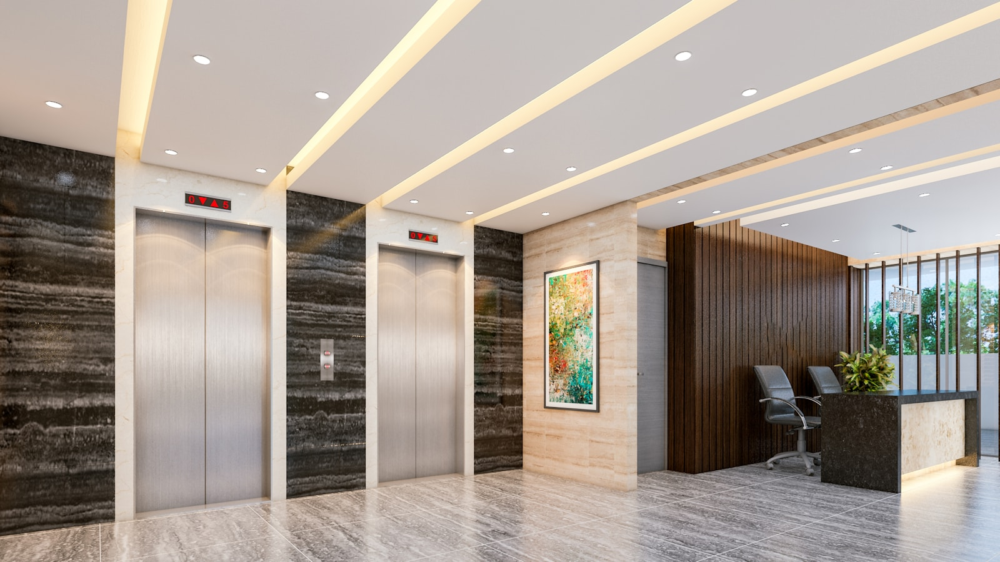

Clear scopes
Walkthroughs turn the building, traffic, schedule, and expectations into a service plan that crews can follow.
From recurring janitorial service to floor care, painting, post-construction cleaning, and supplies, Capitol gives businesses a service partner they can trust.

Five core categories cover the majority of what businesses need. Each one is run on the same systems, the same standards, and the same QA.
Recurring janitorial and day porter service for offices, properties, and multi-tenant buildings.
VCT strip and wax, carpet, tile & grout, epoxy coatings, concrete staining, pressure washing.
Post-construction turnovers and one-off detail cleans on a builder's timeline.
Interior commercial painting as a standalone job or paired with a project cleanup.
Restock and replenishment for paper, soap, liners, and consumables on a managed cadence.
Reliable service is built on the boring stuff: clear schedules, real inspections, fast communication. We obsess over the pieces clients notice — and the ones they shouldn't have to.
Commercial cleaning works best when the scope is clear, the schedule is understood, and communication does not become another job for the client.
Walkthroughs turn the building, traffic, schedule, and expectations into a service plan that crews can follow.
Capitol is built around offices, warehouses, medical spaces, schools, construction sites, and other business facilities.
Service questions, schedule changes, and urgent needs are easier to solve when there is a defined point of contact.
Recurring janitorial, floor care, supplies, painting, and project cleaning can be scoped together when the property needs more than one service.
Pricing and service plans depend on what the facility actually needs, not a generic square-foot number alone.
Vendor approval, project support, or a long-term service relationship — we make it easy to get on the same page from the first conversation.